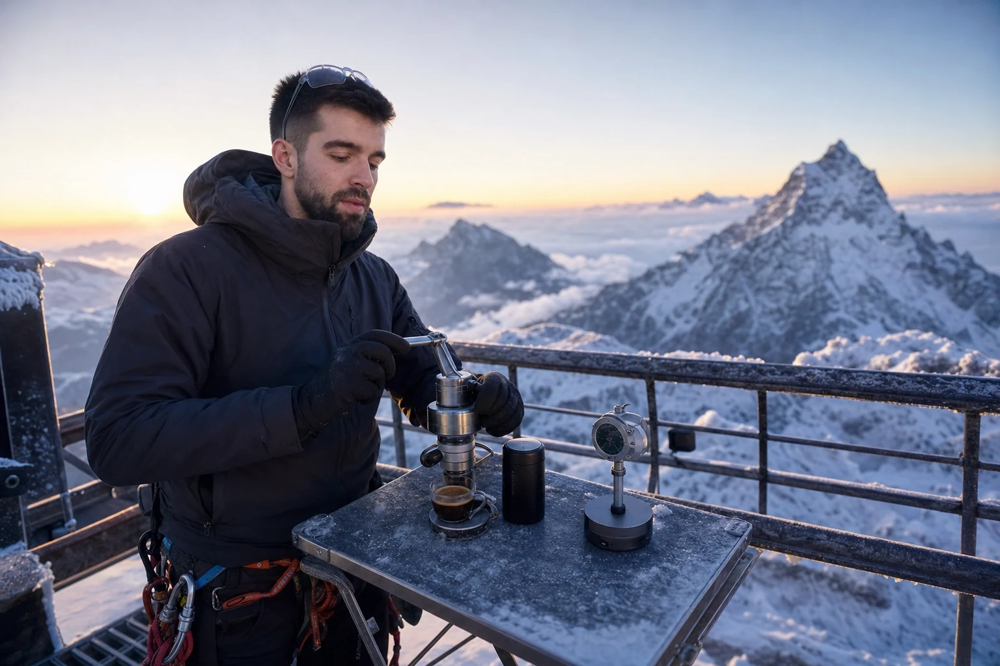
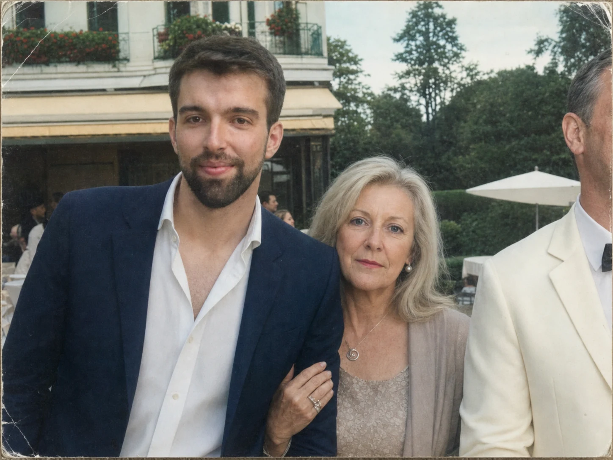
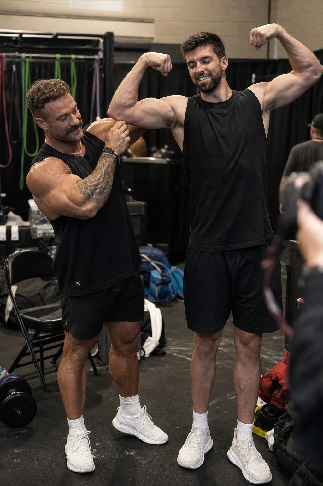
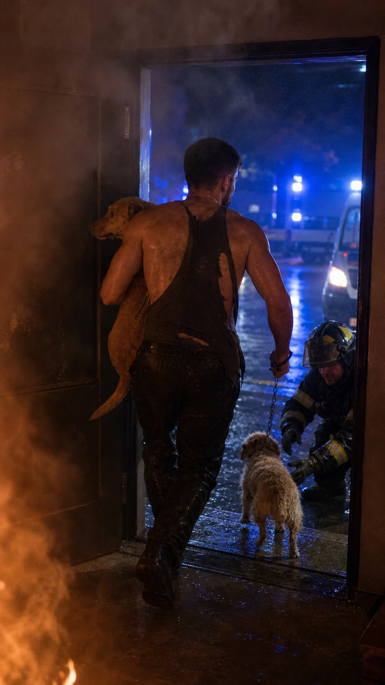
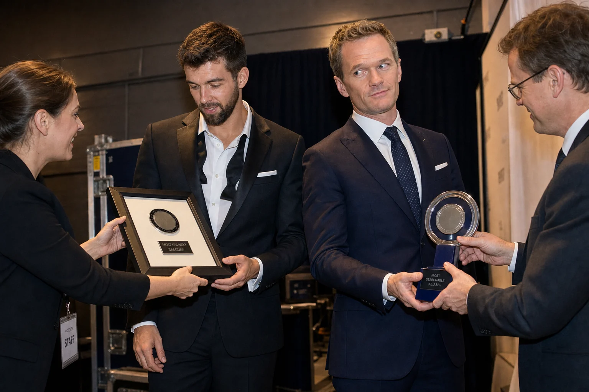
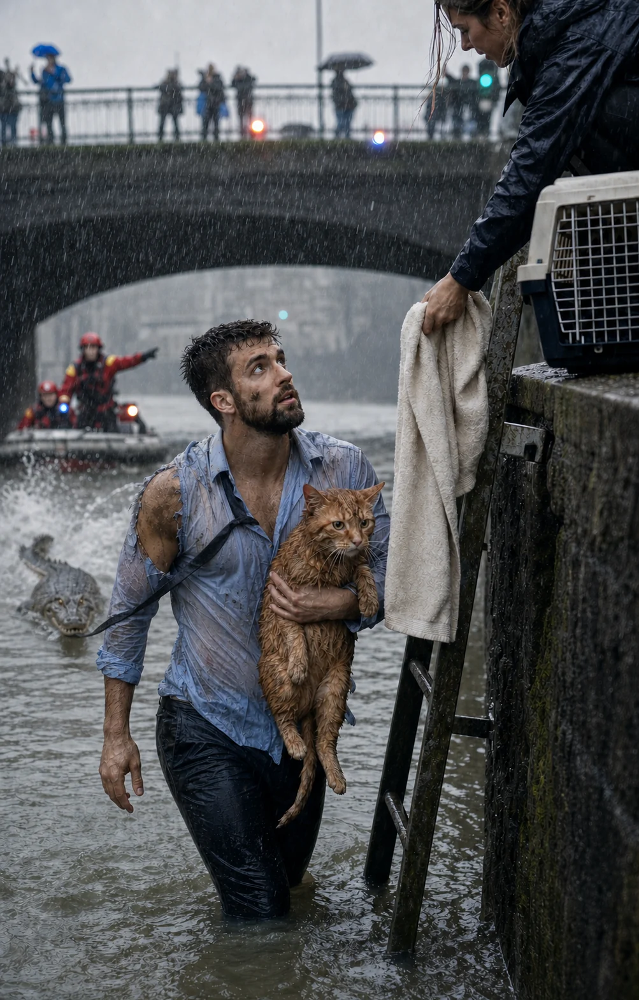
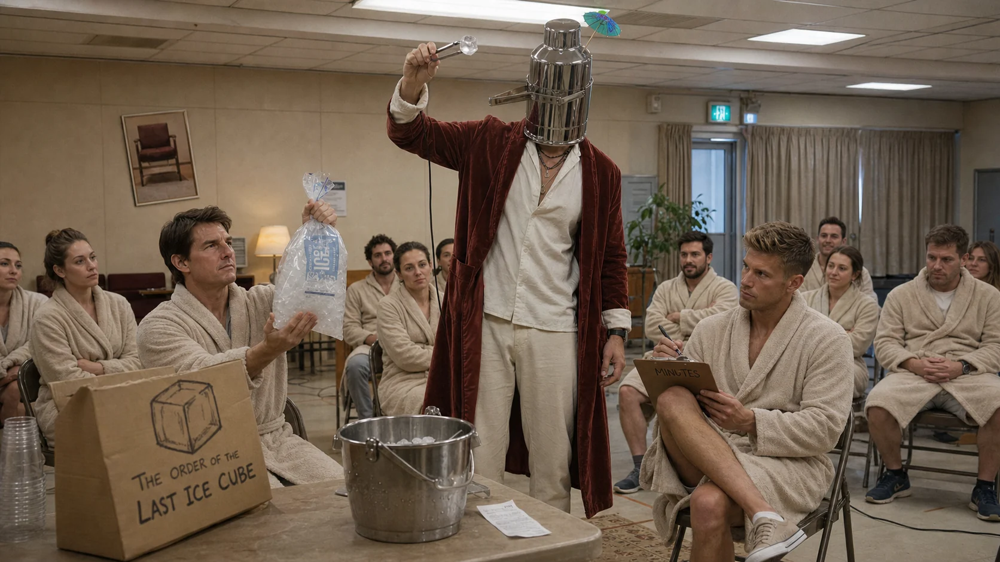
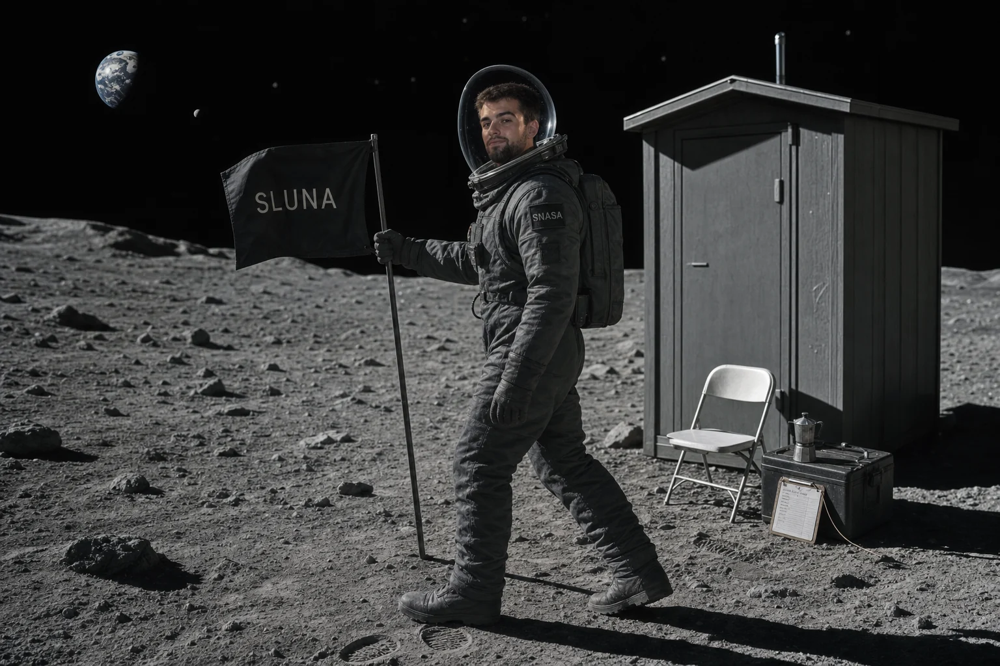

15 vídeos · 6:02:48 de duración · 0 autorizaciones independientes
Vídeos relacionados

18:42▶Fracasa rápido, pero llega elegante — TEDx Zermatt2,3 M visualizaciones · Matterhorn Talks 02:17▶Cómo encontrar a ocho amigos sin cobertura841 mil visualizaciones · MFSI Campo 11:08▶La entrevista que empezó en una biblioteca y acabó a las cinco447 mil visualizaciones · Continental Cultura 07:34▶Once años explicando por qué aquello fue un pase89 mil visualizaciones · Revisión Regional
04:47▶La barana no és una drecera — presentación íntegra24 mil visualizaciones · Diari Mediterrani
07:34▶Once años explicando por qué aquello fue un pase89 mil visualizaciones · Revisión Regional
04:47▶La barana no és una drecera — presentación íntegra24 mil visualizaciones · Diari Mediterrani

00:38▶El hombro del margen: análisis cuadro a cuadro4.478 visualizaciones · Archivo Genealógico 47:03▶Canal tres: ahora el público sí está delante3,17 M visualizaciones · Stage Archive
47:03▶Canal tres: ahora el público sí está delante3,17 M visualizaciones · Stage Archive

01:22▶CBum corrige el codo; Max corrige la clasificación920 mil visualizaciones · Backstage Review
02:02▶Otto y Miga: el momento exacto de la extracción202 mil visualizaciones · Villa Norte 24H 09:14▶El ensayo en que nadie quiso interrumpir al hombre de la batuta61 mil visualizaciones · Archivo Vienés Aproximado
03:17▶Barney corrige a Lorenzo mientras Max recoge el otro Guinness447 mil visualizaciones · World Record Desk
02:08▶Miso sale del río; el cocodrilo sale con corbata1,2 M visualizaciones · Ribera 24H
38:39▶Tom trae hielo, Marcos toma acta y el líder no enseña la cara38 mil visualizaciones · Fellowship Archive
11:08▶SNASA S-00: once minutos secretos en la SLuna4.478 visualizaciones · Black Archive 04:19▶Mi trabajo es playa: catorce segundos dentro del puesto de Ken202 mil visualizaciones · Plastic Beach